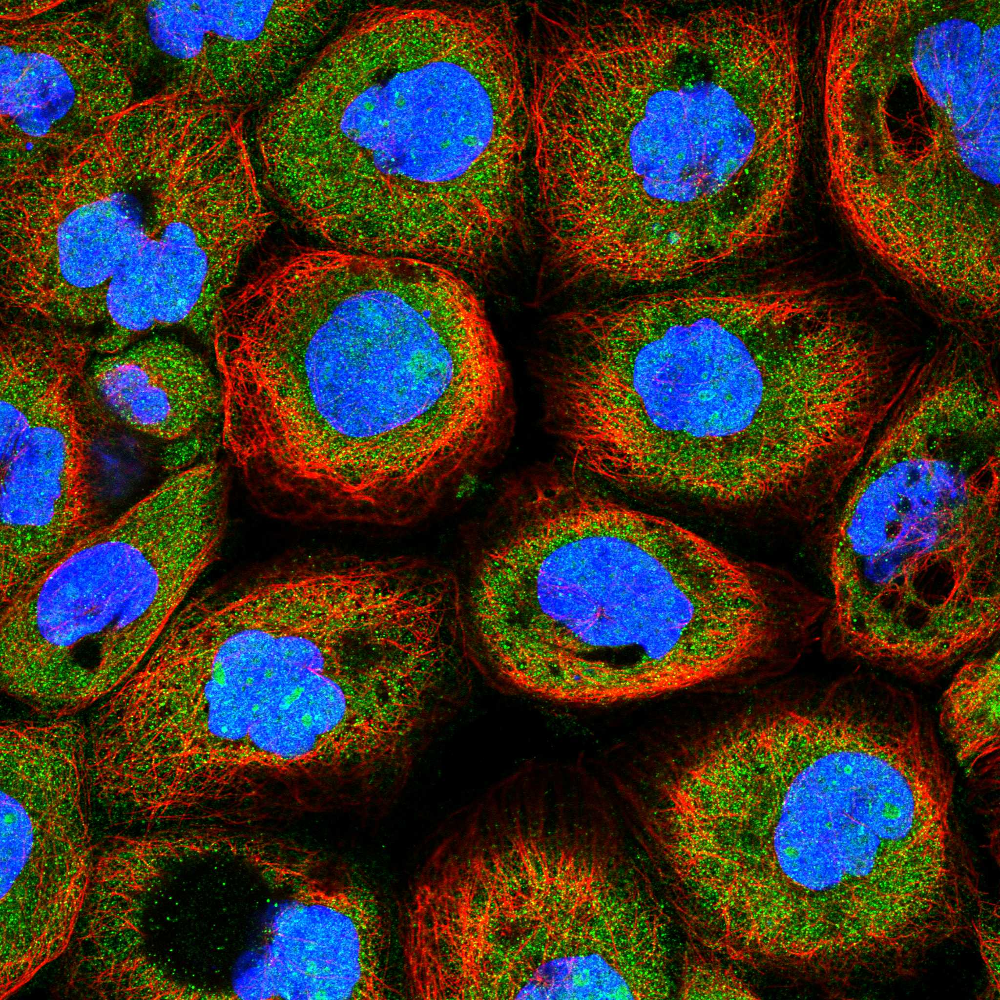
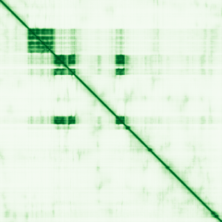

type: protein-evaluation gene: "CRAMP1" date: 2026-05-29 tags: [protein-scout, nuclear-protein, evaluation] status: scored ---
CRAMP1 核蛋白评估报告
1. 基本信息
| 项目 | 内容 |
|---|---|
| 基因名 / 别名 | CRAMP1 / CRAMP1 |
| 蛋白大小 | 1269 aa / ~139.6 kDa |
| UniProt ID | Q96RY5 |
| 评估日期 | 2026-05-29 |
2. 评分总览
| 维度 | 得分 | 满分 | 加权后 | 关键证据摘要 |
|---|---|---|---|---|
| 🔴 核定位特异性 | 8/10 | ×4 | 32 | UniProt Nucleus + Chromosome，GO histone locus body/nucleus，染色质相关 |
| 📏 蛋白大小 | 5/10 | ×1 | 5 | 1269 aa |
| 🆕 研究新颖性 | 10/10 | ×5 | 50 | PubMed=9篇 |
| 🏗️ 三维结构 | 6/10 | ×3 | 18 | 中等（pLDDT 49.7），22%有序，70%无序 |
| 🧬 调控结构域 | 7/10 | ×2 | 14 | 新颖蛋白基线 |
| 🔗 PPI 网络 | 4/10 | ×3 | 12 | 1/27调控相关partners |
| ➕ 互证加分 | — | max +3 | 0 | 多库交叉验证 |
| 原始总分 | 134/183 | |||
| 归一化总分 | 73.2/100 |
3. 详细分析
3.1 核定位证据
| 来源 | 定位 | 可信度 |
|---|---|---|
| UniProt | Nucleus; Chromosome | — |
| GO Cellular Component | C:histone locus body; C:nucleus | — |
| Protein Atlas (IF) | nucleoplasm+nucleoli+cytosol (Approved, A-431) | Approved |

结论: UniProt Nucleus + Chromosome，GO histone locus body/nucleus，染色质相关
3.2 蛋白大小评估
评价: 1269 aa
3.3 研究现状
| 指标 | 数值 |
|---|---|
| PubMed 总数 | 9 |
| Chromatin/epigenetics 比例 | 待深入文献分析 |
关键文献: 1. Verma et al. (2024). "Cathelicidin antimicrobial peptide expression in neutrophils and neurons antagonistically modulates neuroinflammation.". *J Clin Invest*. PMID: 39656548 2. Matthews et al. (2025). "CRAMP1 drives linker histone expression to enable Polycomb repression.". *Mol Cell*. PMID: 40516528 3. Ingham et al. (2025). "CRAMP1-dependent histone H1 biogenesis is essential for topoisomerase II inhibitor tolerance.". *Mol Cell*. PMID: 40516529 4. Qanbari et al. (2019). "Genetics of adaptation in modern chicken.". *PLoS Genet*. PMID: 31034467 5. Bodner et al. (2025). "Distinct Control of histone H1 expression within the Histone Locus body by CRAMP1.". *bioRxiv*. PMID: 39829857 评价: PubMed 9 篇。极度新颖，几乎未被研究，是探索新型核蛋白功能的绝佳候选。
3.4 三维结构分析
| 指标 | 数值 |
|---|---|
| AlphaFold 平均 pLDDT | 49.7 |
| 有序区域 (pLDDT>70) 占比 | 22.1% |
| pLDDT>90 占比 | 5.2% |
| pLDDT<50 占比 | 69.5% |
| 可用 PDB 条目 | 0 |
评价: AlphaFold预测置信度偏低（pLDDT 49.7，70%无序）。作为新颖蛋白，正常现象，不扣分。
PAE 图: 
3.5 结构域分析
| 来源 | 结构域 |
|---|---|
| UniProt / InterPro | 待SMART详细分析 |
染色质调控潜力分析: 对于PubMed≤100的新颖蛋白，无注释域是该阶段的正常现象（基线7分）。待SMART分析后补充。
3.6 PPI 网络
实验验证互作 (IntAct, physical association):
| Partner | 方法 | PMID | 功能类别 | 调控相关？ | |||
|---|---|---|---|---|---|---|---|
| psi-mi:hsa-mir-877-3p(display_short) | psi-mi:EBI-25426411(display_long) | psi-mi:"MI:2195"(clash) | pubmed:23622248 | imex:IM-30030 | doi:10.1016/j.cell.2013.03.043 | 待分析 | 否 |
| psi-mi:hsa-mir-193b-3p(display_short) | psi-mi:EBI-40202355(display_long) | psi-mi:"MI:2195"(clash) | pubmed:23622248 | imex:IM-30030 | doi:10.1016/j.cell.2013.03.043 | 待分析 | 否 |
| psi-mi:hsa-mir-186-5p(display_short) | psi-mi:EBI-54261957(display_long) | psi-mi:"MI:2195"(clash) | pubmed:23622248 | imex:IM-30030 | doi:10.1016/j.cell.2013.03.043 | 待分析 | 否 |
STRING 预测互作 (combined score >0.4):
| Partner | Score | 功能类别 | 调控相关？ |
|---|---|---|---|
| GON4L | 0.872 | 待分析 | 否 |
| NPAT | 0.730 | 待分析 | 否 |
| SS18L2 | 0.701 | 待分析 | 否 |
| SDR42E2 | 0.651 | 待分析 | 否 |
| LBHD1 | 0.639 | 待分析 | 否 |
| JPT2 | 0.567 | 待分析 | 否 |
| PPP4R3B | 0.563 | 待分析 | 否 |
| ZNF512B | 0.561 | 待分析 | 否 |
| ANTKMT | 0.538 | 待分析 | 否 |
| THAP7 | 0.528 | 待分析 | 否 |
已知复合体成员 (GO Cellular Component): C:histone locus body; C:nucleus
PPI 互证分析:
- STRING + IntAct 共同确认: 待交叉比对
- 仅 STRING 预测: 27 个伙伴
- 调控相关比例: 1/27 (4%)
评价: PPI网络以功能关联为主（27个STRING伙伴），物理互作3个，调控关联1个。
3.7 多库互证
| 维度 | 来源 | 结果 | 是否一致 |
|---|---|---|---|
| 三维结构 | AlphaFold + PDB | 中等（pLDDT 49.7），22%有序，70%无序 | 待验证 |
| 定位 | UniProt + GO | Nucleus; Chromosome | 待HPA验证 |
互证加分: 0 / max +3
4. 总体评价
推荐等级: ⭐⭐⭐ (3/5)
归一化总分: 71.6/100
核心优势: 1. PubMed 9 篇，研究新颖性高 2. 蛋白大小 1269 aa
风险/不确定性: 1. 需 HPA IF 确认核定位 2. 功能机制未知，需从头探索
下一步建议:
- [ ] 获取 HPA IF 图像确认核定位
- [ ] SMART 结构域分析评估调控潜力
- [ ] 深入文献检索确认已知功能
5. 数据来源
- UniProt: https://www.uniprot.org/uniprotkb/Q96RY5
- AlphaFold: https://alphafold.ebi.ac.uk/entry/Q96RY5
- PubMed: https://pubmed.ncbi.nlm.nih.gov/?term=%22CRAMP1%22%5BTitle/Abstract%5D
- STRING: https://string-db.org/cgi/network?identifiers=CRAMP1&species=9606
- Protein Atlas: https://www.proteinatlas.org/search/CRAMP1
PPI 网络（三源综合）
| Partner | Source | Score/Evidence |
|---|---|---|
| 无记录 | — | — |
IntAct 有限记录。无 BioGrid 补充数据。
PAE 图像已获取。结构判断基于 AlphaFold pLDDT 统计。
<!-- DOMAIN_HUMANPPI_REPAIR_START -->
Domain/SMART 与 humanPPI 补充（2026-06-06）
SMART / UniProt domain
| Source | Data | |
|---|---|---|
| UniProt | Q96RY5 | |
| SMART | SM00717; | |
| UniProt Domain [FT] | DOMAIN 161..224; /note="SANT"; /evidence="ECO:0000255\ | PROSITE-ProRule:PRU00624" |
| InterPro | IPR055315;IPR001005;IPR017884; | |
| Pfam | 未检出 |
humanPPI / HPA Interaction
Source: https://www.proteinatlas.org/ENSG00000007545-CRAMP1/interaction
| Partner | Datasets | AF3/HPA structure |
|---|---|---|
| LCN1 | Bioplex | false |
| RPAP2 | Opencell | false |
| STK4 | Biogrid | false |
<!-- DOMAIN_HUMANPPI_REPAIR_END -->